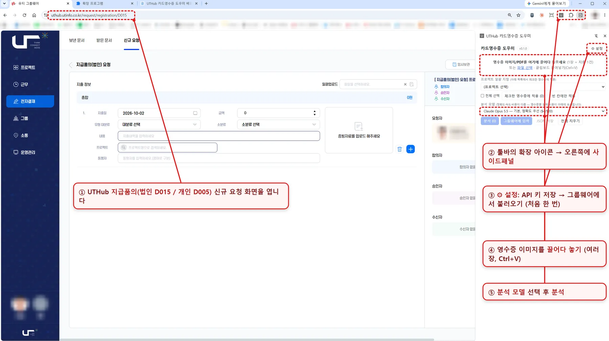
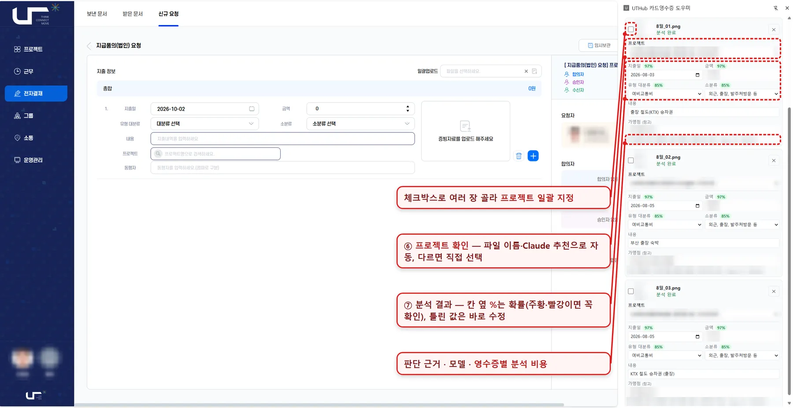
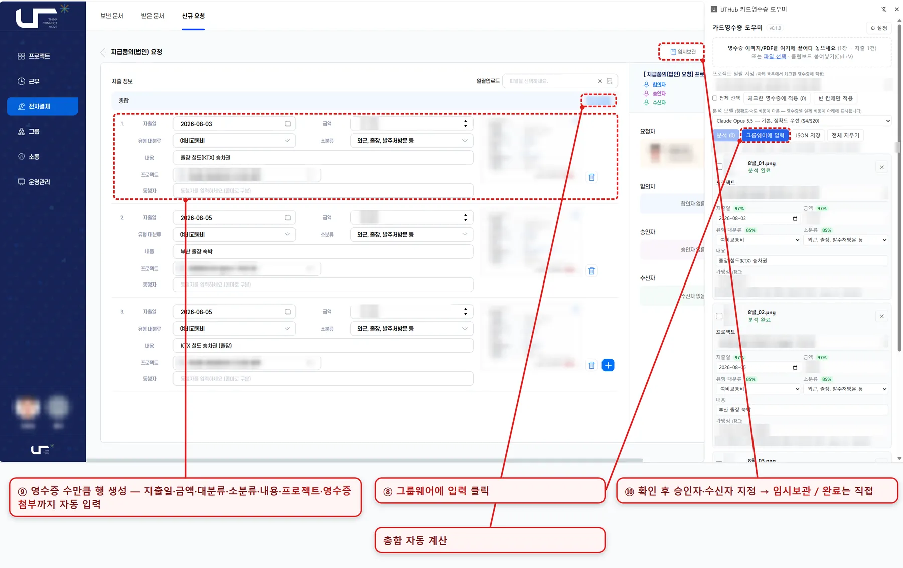

카드영수증 이미지를 넣으면 Claude가 지출일·금액·지출 유형을 읽어 UTHub 지급품의(개인·법인) 화면에 영수증 수만큼 자동 입력하는 크롬 확장 프로그램입니다. 사용자는 프로젝트를 확인하고 완료(요청)만 누르면 됩니다. 결재선(합의자·승인자·수신자)은 설정에 한 번 저장해 두면 자동으로 들어갑니다.
1. 배포 방식
설치 파일은 사내 게시판에 올려 배포하고, 업데이트만 GitHub를 씁니다. 각 PC는 GitHub를 1시간마다 확인해 새 버전을 자동으로 설치합니다.
| 구성 요소 | 하는 일 | 위치 |
|---|---|---|
| GitHub Release | 업데이트용 ZIP, 설치 ZIP, 스크립트 보관 | 최신 Release |
| 설치 파일(exe) | PC당 1회: 더블클릭 → 설치와 자동 업데이트 등록 | 사내 게시판 |
| update.ps1 | 1시간마다와 로그인 시: 새 버전이면 받아서 설치 폴더 교체 | C:\UTGwReceipt |
| 확장 프로그램 | 크롬 시작 시 새 버전 확인(아이콘에 UP 표시), 상단 '지금 업데이트' 버튼, 30분마다 설치 폴더 버전 확인 후 스스로 다시 로드 | 크롬 |
- 업데이트 후에도 설치 폴더가 같아서 API 키 등 설정이 그대로 유지됩니다.
- 사용자가 많아지면 크롬 웹스토어 비공개 등록을 검토합니다. 개발자 모드 없이 설치되고 업데이트도 크롬이 맡습니다.
2. 설치 (직원용, PC당 1회)
게시판의 설치 파일로 한 번만 설치하면 이후 업데이트는 자동입니다. 관리자 권한은 필요 없고 5분이면 끝납니다.
- 게시판에서
유티허브 영수증 등록 도우미 설치 v<버전>.exe를 내려받아 더블클릭합니다. - "Windows의 PC 보호" 창이 뜨면 추가 정보 → 실행을 누릅니다(사내 프로그램이라 서명이 없어 나오는 안내).
- 설치 창이 열리고 GitHub에서 최신 버전을 받아
C:\UTGwReceipt에 설치합니다. "설치 완료"가 나오면 크롬 확장 프로그램 화면이 자동으로 열리고(안 열리면 크롬 주소창에 chrome://extensions 입력), 설치 폴더 경로가 클립보드에 복사됩니다. - 크롬 확장 프로그램 화면 오른쪽 위 개발자 모드를 켭니다.
- 압축해제된 확장 프로그램을 로드합니다를 누르고, 폴더 선택 창 위쪽 주소창에 Ctrl+V → Enter → 폴더 선택을 누릅니다(
C:\UTGwReceipt\gw-receipt-helper). - "UTHub 카드영수증 도우미"가 목록에 나타나면 성공입니다. 퍼즐(🧩) 아이콘에서 핀(📌)을 눌러 툴바에 고정하고, 설치 창은 Enter로 닫습니다.
- 예전에 다른 폴더(압축을 푼 폴더 등)로 불러온 도우미가 있으면 먼저 삭제하고 위 폴더로 다시 불러옵니다.
- zip 설치 파일을 쓰는 경우에는 압축을 풀고
install.cmd를 더블클릭합니다(같은 동작).
크롬이 "위험할 수 있는 파일"로 다운로드를 막거나 백신이 설치 파일을 막으면, zip 설치 파일을 풀고 install.cmd를 더블클릭합니다. 이미 설치한 PC는 설치 파일을 다시 실행할 필요가 없습니다(다시 실행해도 같은 폴더를 갱신하고 설정은 유지).
| 확인 항목 | 방법 |
|---|---|
| 자동 업데이트 등록 여부 | 작업 스케줄러에 UTGwReceipt-AutoUpdate 작업이 있음 |
| 업데이트 기록 | C:\UTGwReceipt\update.log (탐색기가 확장명을 숨기면 흰 문서 아이콘의 update로 보임) |
| 제거 | 설치 폴더 C:\UTGwReceipt의 제거.cmd 더블클릭 후 chrome://extensions에서 삭제 |
설치 폴더(C:\UTGwReceipt)를 옮기거나 지우지 마세요. 크롬이 다른 확장 프로그램으로 인식해 API 키 등 설정을 다시 입력해야 합니다.
v0.5.1 이하로 설치한 PC와 C 드라이브에 폴더를 만들 수 없는 PC는 %LOCALAPPDATA%\UTGwReceipt(예: C:\Users\홍길동\AppData\Local\UTGwReceipt)에 설치돼 있습니다. 그 자리에서 그대로 자동 업데이트되므로 옮길 필요가 없고, 설치 exe를 다시 실행해도 같은 폴더를 갱신합니다. 그 폴더는 숨김 폴더라서 Win+R → %LOCALAPPDATA%\UTGwReceipt 입력으로 엽니다. 이 경우 update.log도 그 폴더에 있고, 제거.cmd가 없으면 그 폴더의 uninstall.ps1을 우클릭 → PowerShell에서 실행으로 제거합니다.
맥북(macOS) 설치
같은 설치 파일에 맥용 스크립트가 함께 들어 있습니다. 설치 후 자동 업데이트와 지금 업데이트 버튼도 윈도우와 같이 동작합니다.
- 게시판의 설치 파일(zip)을 내려받아 더블클릭해 압축을 풉니다.
- 터미널(Cmd+Space로 Spotlight를 열고 '터미널' 검색)을 열고
bash(뒤에 한 칸 띄움)를 입력한 뒤, 풀린 폴더의install-mac.sh파일을 터미널 창에 끌어다 놓고 Enter를 누릅니다. - "설치 완료"가 나오면 크롬 주소창에
chrome://extensions를 입력하고 오른쪽 위 개발자 모드를 켭니다. - 압축해제된 확장 프로그램을 로드합니다를 누르고, 폴더 선택 창에서 Cmd+Shift+G → Cmd+V(경로가 복사되어 있음) → Enter → 선택을 누릅니다.
- 지금 업데이트를 처음 누를 때 크롬이 "UTGwReceipt Updater 열기"를 물으면 허용합니다.
| 항목 | 맥에서의 위치 |
|---|---|
| 설치 폴더 | ~/Library/Application Support/UTGwReceipt |
| 자동 업데이트 | launchd 작업 kr.co.utinfo.gwreceipt.update (1시간마다·로그인 시) |
| 업데이트 기록 | 설치 폴더의 update.log |
| 제거 | 터미널에서 bash "$HOME/Library/Application Support/UTGwReceipt/uninstall-mac.sh" 실행 후 chrome://extensions에서 삭제 |
- "터미널이 다운로드 폴더에 접근하려고 합니다" 창이 뜨면 허용을 누릅니다.
- 설치 후 "백그라운드 항목이 추가됨" 알림이 뜨면 정상입니다(자동 업데이트 작업). 시스템 설정 > 로그인 항목에서 이 항목(bash)을 끄면 자동 업데이트가 멈추니 켜 둡니다.
- 윈도우용 설치 exe·
install.cmd는 맥에서install-mac.sh,C:\UTGwReceipt는~/Library/Application Support/UTGwReceipt, "PowerShell 열기"는 "UTGwReceipt Updater 열기"로 바꿔 읽습니다.
업데이트
- 새 버전이 나오면 1시간 안에 PC로 받아지고, 크롬에는 30분 안에(사이드패널을 열어 둔 동안은 닫은 뒤) 반영됩니다. 바로 받고 싶으면 사이드패널 상단에 뜨는 지금 업데이트 버튼을 누릅니다.
- 알림의 변경 내용 보기를 누르면 새 버전에서 무엇이 바뀌었는지 팝업으로 보여 줍니다. 팝업에서 바로 지금 업데이트를 눌러도 됩니다.
- 처음 누를 때 크롬이 "PowerShell을 열까요?"를 물으면 열기를 누릅니다('항상 허용'을 체크하면 다음부터 묻지 않음). 업데이트가 끝나면 사이드패널이 닫힙니다. 툴바 아이콘을 다시 누르면 새 버전으로 열립니다.
- 버튼을 눌렀는데 크롬이 "PowerShell을 열까요?"를 묻는 창이 뜨지 않고 15초 뒤 설치 안내가 나오면,
chrome://extensions→ 도우미 세부정보 → 로드 위치를 확인합니다. 업데이트는 창 없이 진행되므로 PowerShell 창이 보이지 않는 것은 정상입니다.- 로드 위치가
...\UTGwReceipt\gw-receipt-helper면 정상 설치입니다. 잠시 기다리거나 1시간 안에 자동으로 업데이트됩니다. 삭제하지 마세요(설정이 사라집니다). - 로드 위치가 압축을 푼 폴더 등 다른 곳이면, 2장 윈도우 설치 1~6단계대로 설치 exe를 실행한 뒤 크롬에서 기존 도우미를 삭제하고 설치 창이 알려준(클립보드에 복사된) 폴더를 다시 불러옵니다.
- 로드 위치가
- 크롬을 켤 때도 새 버전을 확인해, 있으면 툴바 아이콘에 UP이 표시됩니다.
3. Claude API 키 발급 (직원용)
API 키는 각자 Claude Console에서 만들어 확장 프로그램에 직접 넣습니다. 키는 만들 때 한 번만 보이므로 바로 붙여넣습니다.
| 계정 종류 | 비용 청구 | 준비 |
|---|---|---|
| 회사 조직 계정 (권장) | 회사 | 담당자가 보낸 Claude Console 초대 메일을 수락. 퇴사하면 키가 자동으로 멈춤 |
| 개인 계정 | 본인 | platform.claude.com에서 가입하고 결제 수단 등록·크레딧 충전 |
- platform.claude.com에 로그인합니다. 회사 조직으로 쓰는 경우 초대받은 회사 메일 계정으로 로그인합니다.
- Settings → API keys를 엽니다.
- Create key를 누릅니다.
- 이름: 알아볼 수 있게 예)
uthub-영수증-홍길동 - 만료(Expiration): 담당자 안내대로. 만료되면 새로 만들어 다시 넣습니다
- Linked account: 본인
- Workspace: 담당자가 지정한 워크스페이스(있는 경우)
- 이름: 알아볼 수 있게 예)
sk-ant-로 시작하는 키가 화면에 한 번만 표시됩니다. 복사 버튼으로 복사합니다.- 크롬 사이드패널 ⚙ 설정 → Claude API 키에 붙여넣고 저장합니다(4장 참고).
- 키는 비밀번호와 같습니다. 메신저·메일·문서에 붙여넣거나 다른 사람과 공유하지 않습니다.
- 키를 잃어버리면 Console에서 다시 볼 수 없습니다. 새 키를 만들고 예전 키는 삭제합니다.
- Create key 버튼이 비활성이면 조직 역할에 키 만들기 권한이 없는 것이므로 담당자에게 요청합니다.
출처: Get your Claude API key (Claude 공식 문서, 2026-10-02 확인)
4. 처음 설정
API 키를 넣고 그룹웨어 목록을 한 번 불러오면 끝입니다.
- 크롬에서 UTHub에 로그인하고 전자결재 → 신규 요청 → 지급품의(개인) 또는 지급품의(법인) 화면을 엽니다.
- 툴바의 확장 아이콘을 누르면 오른쪽에 사이드패널이 열립니다.
- ⚙ 설정에서 3장에서 발급한 Claude API 키(
sk-ant-로 시작)를 붙여넣고 먼저 저장을 누릅니다. - 그룹웨어에서 불러오기를 누릅니다. "프로젝트 N개 · 유형 N개"가 표시되면 성공입니다(지급품의 탭을 보고 있는 상태에서 누릅니다).
- 프로젝트 별칭이나 힌트를 바꿨다면 저장을 한 번 더 누릅니다.

키를 바꾸려면 새 키를 입력하고 저장, 지우려면 키 초기화, 제대로 동작하는지 보려면 키 확인을 누릅니다(비용 없음). 저장된 키는 끝 4자리만 표시됩니다.
| 설정 항목 | 설명 |
|---|---|
| 모델 | 기본 Claude Opus 5.5(정확도 우선). Fable 5.1은 최고 성능·가장 비쌈, Sonnet 5.5는 절반 가격, Haiku 4.5는 최저가. 메인 화면의 '분석 모델'에서도 바꿀 수 있습니다 |
| 프로젝트 목록 | 그룹웨어에서 자동으로 채워집니다. 줄 끝에 세로막대(|)와 별칭을 붙이면(예: …기능개선|○○시스템,B지역) 파일 이름 자동 선택에 쓰입니다 |
| 분류 힌트 | 자주 틀리는 분류를 적어 두면 Claude가 우선 적용합니다. 예: "스타벅스는 복리후생비" |
프로젝트·유형 목록은 UTHub 탭을 보고 있는 상태에서 사이드패널을 열 때, 마지막으로 불러온 지 12시간이 지났으면 자동으로 다시 불러옵니다. 새 프로젝트가 바로 안 보이면 그룹웨어에서 불러오기를 다시 누릅니다.
설정의 Claude 프로젝트 추천 사용을 켜면 분석 때 프로젝트도 추천받습니다(기본 켜짐). 추천 후보는 그룹웨어 지출 화면에서 고를 수 있는 '내 프로젝트'입니다. 프로젝트 힌트에 "A지역 → 26-PRJ-0011", "B지역 → 26-PRJ-0012"처럼 지역과 프로젝트를 적어 두면 추천이 정확해집니다.
결재선 미리 등록
결재선은 잘 바뀌지 않으므로 설정에 한 번 저장해 두고 계속 씁니다. ⚙ 설정의 결재선 칸에 이름을 쉼표(또는 띄어쓰기)로 구분해 적은 순서대로 입력하고 저장을 누릅니다.
| 칸 | 입력 예 |
|---|---|
| 합의자 | 없으면 비워 둠 |
| 승인자 | 홍길동, 김철수, 이영희 |
| 수신자 | 박민수, 최지은 |
- 그룹웨어에 입력을 누르면 영수증 행과 함께 결재선도 들어갑니다. 결재선만 넣으려면 설정의 결재선만 지금 화면에 넣기를 누릅니다.
- 같은 이름이 여럿이면
김철수(B팀)처럼 괄호에 부서를 적습니다. 찾지 못한 이름이나 동명이인은 건너뛰고 알림에 표시합니다. - 화면에 이미 있는 사람은 중복 없이 설정 순서대로 정리되고, 설정에 없는 사람은 지우지 않고 뒤에 남깁니다.
- 자동 지정을 원하지 않으면 그룹웨어에 입력할 때 결재선도 자동 지정 체크를 끕니다. 저장한 결재선은 확장을 지웠다가 다시 설치하면 사라집니다.
5. 사용 순서
영수증 1장이 지출 1건이 되고, 사용자는 프로젝트만 확인하면 됩니다.
사이드패널 위쪽 메뉴에서 기능을 고릅니다. 카드영수증은 지급품의(개인 D005·법인 D015)용이고, 실행예산 품의(D016)는 엑셀 업로드로 필드를 채우는 기능으로 현재 기능구현중입니다. 그룹웨어에서 해당 화면을 열면 맞는 메뉴로 자동 전환됩니다.
사이드패널 오른쪽 위 📖 매뉴얼 버튼을 누르면 이 매뉴얼이 새 탭으로 열립니다. 프로그램에 포함돼 있어 업데이트하면 매뉴얼도 최신으로 바뀝니다(화면 캡처의 이름·금액 등은 가려져 있음).
- UTHub 지급품의(개인) 또는 지급품의(법인) 신규 요청 화면을 열고 사이드패널을 엽니다.
- 영수증 이미지를 사이드패널에 끌어다 놓습니다. 파일 선택과 클립보드 붙여넣기(Ctrl+V)도 됩니다.
- 프로젝트를 확인합니다.
- 영수증 파일 이름을
프로젝트번호_프로젝트이름_설명형식으로 저장하면 프로젝트가 자동으로 선택됩니다. 예:26-PRJ-0012_○○시스템 구축_영수증1.png→ 26-PRJ-0012. 연도는26/2026, 번호는0012/12모두 인식합니다. 번호 없이 이름만 비슷해도 고르지만 "비슷한 프로젝트 — 확인 필요"로 표시되고, 번호와 이름이 다른 프로젝트를 가리키면 이름 쪽을 고른 뒤 확인을 요청합니다. - "비슷한 프로젝트 — 확인 필요"로 표시된 건은 맞는지 한 번 봅니다.
- 파일 이름으로 정해지지 않은 영수증은 분석 때 Claude가 장소 단서(가맹점 주소, 하이패스 구간, 열차 도착역)로 프로젝트를 추천합니다. "Claude 추천 72% — 확인 필요"로 표시되며, 글자에 마우스를 올리면 근거가 보입니다. 사무실 근처 식당처럼 장소로 구분되지 않는 영수증은 비워 둡니다.
- 여러 장을 한 번에 지정하려면 프로젝트 일괄 지정을 씁니다. 영수증 왼쪽 체크박스로 고른 뒤 프로젝트를 선택하고 체크한 영수증에 적용을 누릅니다. 프로젝트가 여러 개면 A지역 건 체크 → 적용, B지역 건 체크 → 적용처럼 반복합니다. 빈 칸에만 적용은 프로젝트가 없는 영수증에만 넣습니다. Claude 추천을 쓰려면 일괄 지정은 분석이 끝난 뒤에 합니다(추천은 프로젝트가 빈 영수증에만 들어감).
- 영수증 파일 이름을
- 분석을 누릅니다. 영수증 3장씩 동시에 처리해 지출일·금액·유형 대분류·소분류·내용을 채웁니다. 분석 전 버튼 위 '분석 모델'에서 모델을 고를 수 있고, 영수증별 실제 분석 비용은 결과 아래에, 합계는 상단 요약에 표시됩니다.
- 결과를 훑어봅니다. 칸 옆 %는 지출일·금액은 글자 인식 확률, 대분류·소분류는 유형 분류 확률입니다. 주황(70% 미만)·빨강(50% 미만)이거나 빨간 테두리에 '미선택'이 붙은 칸은 직접 확인해 고릅니다.
- 그룹웨어에 입력을 누릅니다. 화면에 영수증 수만큼 행이 생기고 영수증 이미지도 첨부됩니다. 이미 입력해 둔 행은 그대로 남고, 선택이 안 된 드롭다운은 그룹웨어 화면에 빨간 점선으로 표시됩니다. 프로젝트나 소분류가 빈 영수증이 있으면 입력이 먼저 막히니 채운 뒤 누릅니다.
- 그룹웨어 화면에서 내용을 확인하고 결재선(합의자·승인자·수신자)이 맞는지 확인한 뒤 완료(또는 임시보관)를 직접 누릅니다.


알아두면 좋은 점:
- 그룹웨어에 입력을 두 번 누르면 같은 지출이 중복으로 들어갑니다. 이미 입력한 영수증은 "그룹웨어 입력함"으로 표시되고, 다시 누르면 아직 입력하지 않은 건만 넣을지 물어봅니다.
- "※내 프로젝트 아님"으로 표시된 프로젝트는 그룹웨어 지출 화면에서 선택되지 않을 수 있습니다. 해당 프로젝트에 투입 등록이 되어 있는지 확인하세요.
- 그룹웨어 첨부는 jpg·png만 받습니다. 다른 이미지는 png로 자동 변환되고, PDF 영수증은 분석만 되고 첨부는 직접 해야 합니다.
- 가맹점은 확인용 참고값이고 그룹웨어에는 들어가지 않습니다.
- JSON 저장으로 분석 결과를 파일로 받아 둘 수 있습니다.
개인카드와 법인카드
| 열려 있는 화면 | 주소 | 카드구분 | 입력 전 확인 |
|---|---|---|---|
| 지급품의(개인) | /request/registration/D005 | 개인카드 | 법인카드로 읽힌 영수증이 있으면 경고 |
| 지급품의(법인) | /request/registration/D015 | 법인카드 | 개인카드로 읽힌 영수증이 있으면 경고 |
두 화면은 사용법이 같고, 카드구분은 그룹웨어가 화면에 따라 정합니다. 개인카드와 법인카드 영수증이 섞여 있으면 각각 따로 넣어 해당 화면에서 입력합니다.
법인카드 영수증 처리 순서
- UTHub 전자결재 → 신규 요청 → 지급품의(법인) 화면을 엽니다. 주소가
/request/registration/D015로 끝나면 맞습니다. - 사이드패널에 법인카드 영수증만 넣고 프로젝트를 확인한 뒤 분석을 누릅니다.
- 그룹웨어에 입력을 누릅니다. 영수증 중 "개인카드"로 읽힌 건이 있으면 파일 이름과 함께 경고가 뜨니, 개인카드 건은 빼고 다시 넣거나 맞는지 확인한 뒤 계속합니다.
- 카드구분은 그룹웨어가 법인카드로 자동 지정합니다. 결재선을 확인하고 완료(또는 임시보관)를 누릅니다.
개인카드와 법인카드 영수증이 한꺼번에 있으면, 개인 건을 지급품의(개인)에 먼저 입력한 뒤 전체 지우기를 하고 법인 건을 넣어 지급품의(법인)에 입력합니다.
6. 문제 해결
대부분은 화면 새로고침과 목록 다시 불러오기로 해결됩니다.
| 증상 | 원인 | 조치 |
|---|---|---|
| "그룹웨어에 입력" 버튼이 회색 | 분석이 끝난 영수증이 없음 | 영수증을 넣고 분석부터 다시 |
| "API 키가 올바르지 않습니다 (401)" | 키 오타 또는 폐기된 키 | 설정에서 키를 다시 붙여넣기, 안 되면 3장 절차로 새 키 발급 |
| "요청 한도 초과 (429)" | 단시간에 많은 요청 또는 월 한도 도달 | 잠시 후 분석 다시. 계속되면 배포 담당자에게 문의 |
| "지출 유형을 그룹웨어에서 불러오지 않음" | 대분류·소분류 목록이 없음 | UTHub 탭을 열고 ⚙ 설정 → 그룹웨어에서 불러오기 후, 대분류·소분류를 직접 고르거나 ✕로 지우고 다시 넣어 분석 |
| "UTHub 탭을 연 상태에서 눌러주세요" | 현재 보고 있는 탭이 UTHub가 아님 | 지급품의 화면 탭을 누른 뒤 다시 시도 |
| "화면 state를 찾지 못했습니다" | 지급품의(개인·법인) 화면이 아니거나 그룹웨어 화면이 바뀜 | 화면 F5 후 다시. 계속되면 GitHub Issues에 메시지 캡처와 함께 등록 |
| 프로젝트가 목록에 없음 | 목록을 불러온 뒤 새로 생긴 프로젝트 | 그룹웨어에서 불러오기 다시 |
| 확장 프로그램이 목록에서 사라짐 | 설치한 폴더를 지웠거나 옮김 | 2장 설치(설치 exe)를 다시. API 키도 다시 입력 |
| "지금 업데이트"를 눌러도 반응 없음 | 설치 프로그램 없이 압축을 푼 폴더를 크롬에 직접 불러옴(세부정보의 로드 위치로 확인) | 로드 위치가 UTGwReceipt 폴더가 아닐 때만: 2장대로 설치 exe 실행 → 크롬에서 기존 도우미 삭제 → 설치 창이 알려준(클립보드에 복사된) 폴더를 다시 불러오기. UTGwReceipt 폴더면 정상이므로 삭제하지 말고 기다림 |
| update.log 파일이 안 보임 | 탐색기가 파일 확장명을 숨김(update.log와 update.ps1이 둘 다 update로 보임) | 흰 문서 아이콘의 update를 열거나, Win+R → notepad C:\UTGwReceipt\update.log |
지금 쓰는 버전은 사이드패널 제목 옆(예: v0.6.2)에 표시됩니다. 새 버전이 반영되지 않으면 C:\UTGwReceipt\update.log의 마지막 줄을 확인합니다. "최신 상태"나 "업데이트 완료"면 정상이고, "오류"면 그 내용을 GitHub Issues에 등록합니다.
해결되지 않으면 사이드패널에서 우클릭 → 검사 → Console 탭을 캡처해 GitHub Issues에 등록합니다.
7. 보안·비용 유의사항
영수증 이미지는 분석을 위해 Anthropic(Claude) API로 전송되므로, 전사 배포 전에 사내 개인정보·보안 담당자의 확인을 받는 것을 권장합니다.
| 항목 | 내용 |
|---|---|
| 외부로 나가는 것 | 영수증 이미지(카드번호 일부·가맹점·금액 포함), 지출 유형 목록, 분류 힌트. 'Claude 프로젝트 추천 사용'이 켜져 있으면(기본) 내 프로젝트 목록(ID·이름·별칭)과 프로젝트 힌트도 전송 |
| 외부로 나가지 않는 것 | 전체 프로젝트 목록, 그룹웨어 로그인 정보, 승인자·수신자 정보 (추천을 끄면 프로젝트 정보는 전송하지 않음) |
| API 키 저장 위치 | 각 PC의 크롬 확장 저장소(암호화되지 않음). 공용 PC에는 설치하지 않습니다 |
| 그룹웨어 접근 | 사용자가 로그인한 UTHub 탭에서만 동작하며, 최종 요청은 사용자가 직접 누릅니다 |
| 비용 | 사이드패널에 영수증별 실제 비용($)과 합계가 표시됩니다. 대략 Opus 5.5 기준 영수증 1장당 $0.01~0.03, Haiku 4.5는 그 수 분의 1, Fable 5.1은 약 2.5배 |
비용은 Anthropic Console의 사용량 화면에서 키별로 확인할 수 있고, 월 한도를 걸어 두면 초과 사용을 막을 수 있습니다.
설치·업데이트가 PC에 만드는 것: 설치 폴더 C:\UTGwReceipt, 작업 스케줄러 UTGwReceipt-AutoUpdate(1시간마다·로그인 시), 현재 사용자 레지스트리 HKCU\Software\Classes\utgwr-update('지금 업데이트' 버튼용). 확장 프로그램은 새 버전 확인을 위해 GitHub API에 접속합니다. 자동 업데이트는 GitHub Release의 파일을 서명 확인 없이 실행하므로, 배포 담당자는 GitHub 계정에 2단계 인증을 켜 두어야 합니다.